算法（Algorithm）是将一组输入转化成一组输出的一系列计算步骤，其中每个步骤必须能在有限时间内完成。比如第5.3节习题1中的Euclid算法，输入是两个正整数，输出是它们的最大公约数，计算步骤是取模、比较等操作，这个算法一定能在有限的步骤和时间内完成（想一想为什么？）。再比如将一组数从小到大排序，输入是一组原始数据，输出是排序之后的数据，计算步骤包括比较、移动数据等操作。
算法是用来解决一类计算问题的，注意是一类问题，而不是一个特定的问题。例如，一个排序算法应该能对任意一组数据进行排序，而不是仅对int a[] = { 1, 3, 4, 2, 6, 5 };这样一组特定的数据排序，如果只需要对这一组数据排序可以写这样一个函数来做：
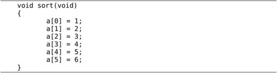
这显然不叫算法，因为不具有通用性。由于算法是用来解决一类问题的，它必须能够正确地解决这一类问题中的任何一个实例，这个算法才是正确的。对于排序算法，任意输入一组数据，它必须都能输出正确的排序结果，这个排序算法才是正确的。不正确的算法有两种可能，一是对于该问题的某些输入，该算法会无限计算下去，不会终止；二是对于该问题的某些输入，该算法终止时输出的是错误的结果。有时候不正确的算法也是有用的，如果对于某个问题寻求正确的算法很困难，而某个不正确的算法可以在有限时间内终止，并且能把误差控制在一定范围内，那么这样的算法也是有实际意义的。例如有时候寻找最优解的开销很大，往往会选择能给出次优解的算法。
本章介绍几种典型的排序和查找算法，并围绕这几种算法做时间复杂度分析。学完本章之后如果想进一步学习，可以参考一些全面系统地介绍算法的书，例如参考文献[16]和参考文献[17]。
插入排序算法类似于玩扑克时抓牌的过程，玩家每拿到一张牌都要插入到手中已有的牌里，使之从小到大排好序，如图11.1所示（该图出自参考文献[16]的2.1节）：
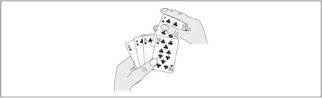
图11.1 扑克牌的插入排序
也许你没有意识到，但其实你的思考过程是这样的：现在抓到一张7，把它和手里的牌从右到左依次比较，7比10小，应该再往左插，7比5大，好，就插这里。为什么比较了10和5就可以确定7的位置？为什么不用再比较左边的4和2呢？因为这里有一个重要的前提：手里的牌已经是排好序的。现在我插了7之后，手里的牌仍然是排好序的，下次再抓到的牌还可以用这个方法插入。
编程对一个数组进行插入排序也是同样道理，但和插入扑克牌有一点不同，不可能在两个相邻的存储单元之间再插入一个单元，因此要将插入点之后的数据依次往后移动一个单元。排序算法如下：
例11.1 插入排序
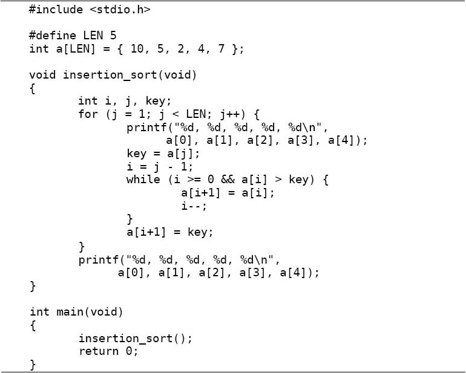
为了更清楚地观察排序过程，我们在每次循环开头插了打印语句，在排序结束后也插了打印语句。程序运行结果是：
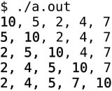
如何严格证明这个算法是正确的？换句话说，只要反复执行该算法的for循环体，执行LEN-1次，就一定能把数组a排好序，而不管数组a的原始数据是什么，如何证明这一点呢？我们可以借助Loop Invariant的概念和数学归纳法来理解循环结构的算法，假如某个判断条件满足以下三条准则，它就称为Loop Invariant：
1．第一次执行循环体之前该判断条件为真。
2．如果“第N-1次循环之后（或者说第N次循环之前）该判断条件为真”这个前提可以成立，那么就有办法证明第N次循环之后该判断条件仍为真。
3．如果在所有循环结束后该判断条件为真，那么就有办法证明该算法正确地解决了问题。
只要我们找到这个Loop Invariant，就可以证明一个循环结构的算法是正确的。上述插入排序算法的Loop Invariant是这样的判断条件：第j次循环之前，子序列a[0..j-1]是排好序的。在上面的打印结果中，我把子序列a[0..j-1]加粗表示。下面我们验证一下Loop Invariant的三条准则：
1．第一次执行循环之前，j=1，子序列a[0..j-1]只有一个元素a[0]，只有一个元素的序列显然是排好序的。
2．第j次循环之前，如果“子序列a[0..j-1]是排好序的”这个前提成立，现在要把key=a[j]插进去，按照该算法的步骤，把a[j-1]、a[j-2]、a[j-3]等比key大的元素都依次往后移一个，直到找到合适的位置将key插入，就能证明循环结束时子序列a[0..j]是排好序的。就像插扑克牌一样，“手中已有的牌是排好序的”这个前提很重要，如果没有这个前提，就不能证明再插一张牌之后也是排好序的。
3．当循环结束时，j=LEN，如果“子序列a[0..j-1]是排好序的”这个前提成立，那就是说a[0..LEN-1]是排好序的，也就是说整个数组a的LEN个元素都排好序了。可见，有了这三条，就可以用数学归纳法证明这个循环是正确的。这和第5.3节证明递归程序正确性的思路是一致的，这里的第一条就相当于递归的Base Case，第二条就相当于递归的递推关系。这再次说明了递归和循环是等价的。
1．实现选择排序算法：第一次从数组a[0..LEN-1]中找出最小元素交换到a[0]的位置，第二次从数组a[1..LEN-1]中找出最小元素交换到a[1]的位置，依此类推。排序过程举例如下：
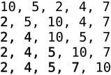
解决同一个问题可以有很多种算法，比较评价算法的好坏，一个重要的标准就是算法的时间复杂度。现在研究一下插入排序算法的执行时间，按照习惯，输入长度LEN以下用n表示。设循环中各条语句的执行时间分别是c1、c2、c3、c4、c5这样五个常数㉖：
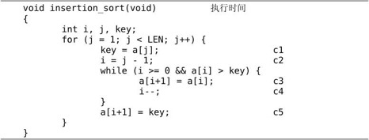
显然外层for循环的执行次数是n-1次，假设内层的while循环执行m次，则总的执行时间粗略估计是(n-1)×(c1+c2+c5+m×(c3+c4))。当然，for和while后面()括号中的赋值和条件判断的执行也需要时间，而我没有设一个常数来表示，这不影响我们的粗略估计。
这里有一个问题，m不是个常数，也不取决于输入长度n，而是取决于具体的输入数据。在最好情况下，数组a的原始数据已经排好序了，while循环一次也不执行，总的执行时间是(c1+c2+c5)×n-(c1+c2+c5)，可以表示成an+b的形式，是n的线性函数（Linear Function）。那么在最坏情况（Worst Case）下又如何呢？所谓最坏情况是指数组a的原始数据正好是从大到小排好序的，请读者想一想为什么这是最坏情况，然后把上式中的m替换掉算一下执行时间是多少。
数组a的原始数据属于最好和最坏情况的都比较少见，如果原始数据是随机的，可称为平均情况（Average Case）。如果原始数据是随机的，那么每次循环将已排序的子序列a[1..j-1]与新插入的元素key相比较，子序列中平均都有一半的元素比key大而另一半比key小，请读者把上式中的m替换掉算一下执行时间是多少。最后的结论应该是：在最坏情况和平均情况下，总的执行时间都可以表示成an2+bn+c的形式，是n的二次函数（Quadratic Function）。
在分析算法的时间复杂度时，我们更关心最坏情况而不是最好情况，理由如下：
1．最坏情况给出了算法执行时间的上界，我们可以确信，无论给什么输入，算法的执行时间都不会超过这个上界，这样为比较和分析提供了便利。
2．对于某些算法，最坏情况是最常发生的情况，例如在数据库中查找某个信息的算法，最坏情况就是数据库中根本不存在该信息，都找遍了也没有，而某些应用场合经常要查找一个信息在数据库中存在不存在。
比较两个多项式a1n+b1和a2n2+b2n+c2的值（n取正整数）可以得出结论：n的最高次指数是最主要的决定因素，常数项、低次幂项和系数都是次要的。比如100n+1和n2+1，虽然后者的系数小，当n较小时前者的值较大，但是当n>100时，后者的值就远远大于前者了。如果同一个问题可以用两种算法解决，其中一种算法的时间复杂度为线性函数，另一种算法的时间复杂度为二次函数，当问题的输入长度n足够大时，前者明显优于后者。因此我们可以用一种更粗略的方式表示算法的时间复杂度，把系数和低次幂项都省去，线性函数记作Θ(n)，二次函数记作Θ(n2)。
Θ(g(n))表示和g(n)同一量级的一类函数，例如所有的二次函数f(n)都和g(n)=n2属于同一量级，都可以用Θ(n2)来表示，甚至有些不是二次函数的也和n2属于同一量级，例如2n2+3lgn。“同一量级”这个概念可以用图11.2来说明（该图出自参考文献[16]的3.1节）：
图11.2 Θ-notation
如果可以找到两个正的常数c1和c2，使得n足够大的时候（也就是n≥n0的时候）f(n)总是夹在c1g(n)和c2g(n)之间，就说f(n)和g(n)是同一量级的，f(n)就可以用Θ(g(n))来表示。
以二次函数为例，比如1/2n2-3n，要证明它是属于Θ(n2)这个集合的，我们必须确定c1、c2和n0，这些常数不随n改变，并且当n≥n0以后，c1n2≤1/2n2-3n≤c2n2总是成立的。为此我们从不等式的每一边都除以n2，得到c1≤1/2-3/n≤c2。如图11.3所示：
图11.3 1/2-3/n
这样就很容易看出来，无论n取多少，该函数一定小于1/2，因此c2=1/2，当n=6时函数值为0，n>6时该函数都大于0，可以取n0=7，c1=1/14，这样当n≥n0时都有1/2-3/n≥c1。通过这个证明过程可以得出结论，当n足够大时任何an2+bn+c都夹在c1n2和c2n2之间，相对于n2项来说bn+c的影响可以忽略，a可以通过选取合适的c1、c2来补偿。
几种常见的时间复杂度函数按数量级从小到大的顺序依次是：Θ(lgn)，Θ(sqrt(n))，Θ(n)，Θ(nlgn)，Θ(n2)，Θ(n3)，Θ(2n)，Θ(n!)。其中，lgn通常表示以10为底n的对数，但是对于Θ-notation来说，Θ(lgn)和Θ(log2n)并无区别（想一想这是为什么），在算法分析中lgn通常表示以2为底n的对数。可是什么算法的时间复杂度里会出现lgn呢？回顾插入排序的时间复杂度分析，无非是循环体的执行时间乘以循环次数，只有加和乘运算，怎么会出来lg呢？下一节归并排序的时间复杂度里面就有lg，请读者留心lg运算是从哪出来的。
除了Θ-notation之外，表示算法的时间复杂度常用的还有一种Big-O notation。我们知道插入排序在最坏情况和平均情况下时间复杂度是Θ(n2)，在最好情况下是Θ(n)，数量级比Θ(n2)要小，那么总结起来在各种情况下插入排序的时间复杂度是O(n2)。Θ的含义和“等于”类似，而大O的含义和“小于等于”类似。
插入排序算法采取增量式（Incremental）的策略解决问题，每次添一个元素到已排序的子序列中，逐渐将整个数组排序完毕，它的时间复杂度是O(n2)。下面介绍另一种典型的排序算法——归并排序，它采取分而治之（Divide-and-Conquer）的策略，时间复杂度是Θ(nlgn)。归并排序的步骤如下：
1．Divide：把长度为n的输入序列分成两个长度为n/2的子序列。
2．Conquer：对这两个子序列分别采用归并排序。
3．Combine：将两个排序好的子序列合并成一个最终的排序序列。
在描述归并排序的步骤时又调用了归并排序本身，可见这是一个递归的过程。
例11.2 归并排序
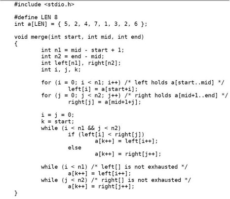
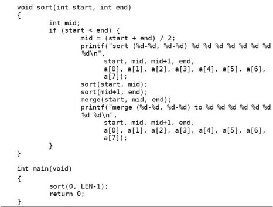
执行结果是：
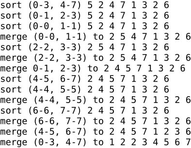
sort函数把a[start..end]平均分成两个子序列，分别是a[start..mid]和a[mid+1..end]，对这两个子序列分别递归调用sort函数进行排序，然后调用merge函数将排好序的两个子序列合并起来，由于两个子序列都已经排好序了，合并的过程很简单，每次循环取两个子序列中最小的元素进行比较，将较小的元素取出放到最终的排序序列中，如果其中一个子序列的元素已取完，就把另一个子序列剩下的元素都放到最终的排序序列中。为了便于理解程序，我在sort函数开头和结尾插了打印语句，可以看出调用过程是这样的，如图11.4所示：
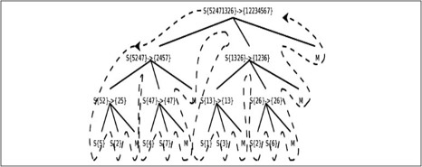
图11.4 归并排序调用过程
图中S表示sort函数，M表示merge函数，整个控制流程沿虚线所示的方向调用和返回。由于sort函数递归调用了自己两次，所以各函数之间的调用关系呈树状结构。画这个图只是为了清楚地展现归并排序的过程，读者在理解递归函数时一定不要全部展开来看，而是要抓住Base Case和递推关系来理解。我们分析一下归并排序的时间复杂度，以下分析出自参考文献[16]的2.3节。
首先分析merge函数的时间复杂度。在merge函数中演示了C99的新特性——可变长数组，当然也可以避免使用这一特性，比如把left和right都按最大长度LEN分配。不管用哪种办法，定义数组并分配存储空间的执行时间都可以看作常数，与数组的长度无关，常数用Θ-notation记作Θ(1)。设子序列a[start..mid]的长度为n1，子序列[mid+1..end]的长度为n2，a[start..end]的总长度为n=n1+n2，则前两个for循环的执行时间是Θ(n1+n2)，也就是Θ(n)，后面三个for循环合在一起看，每走一次循环就会在最终的排序序列中确定一个元素，最终的排序序列共有n个元素，所以执行时间也是Θ(n)。两个Θ(n)再加上若干常数项，merge函数总的执行时间仍是Θ(n)，其中n=end-start+1。
然后分析sort函数的时间复杂度，当输入长度n=1，也就是start==end时，if条件不成立，执行时间为常数Θ(1)，当输入长度n>1时：
总的执行时间=2×输入长度为n/2的sort函数的执行时间+merge函数的执行时间Θ(n)
设输入长度为n的sort函数的执行时间为T(n)，综上所述：
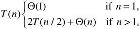
这是一个递推公式（Recurrence），我们需要消去等号右侧的T(n)，把T(n)写成n的函数。其实符合一定条件的Recurrence的展开有数学公式可以套，这里我们略去严格的数学证明，只是从直观上看一下这个递推公式的结果。当n=1时可以设T(1)=c1，当n>1时可以设T(n)=2T(n/2)+c2n，我们取c1和c2中较大的一个设为c，把原来的公式改为：
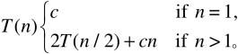
这样计算出的结果应该是T(n)的上界。下面我们把T(n/2)展开成2T(n/4)+cn/2（图11.5中的(c)），然后再把T(n/4)进一步展开，直到最后全部变成T(1)=c（图11.5中的(d)）：
把图11.5(d)中所有的项加起来就是总的执行时间。这是一个树状结构，每一层的和都是cn，共有lgn+1层，因此总的执行时间是cnlgn+cn，相比nlgn来说，cn项可以忽略，因此T(n)的上界是Θ(nlgn)。
如果先前取c1和c2中较小的一个设为c，计算出的结果应该是T(n)的下界，然而推导过程一样，结果也是Θ(nlgn)。既然T(n)的上下界都是Θ(nlgn)，显然T(n)就是Θ(nlgn)。
和插入排序的平均情况相比归并排序更快一些，虽然merge函数的步骤较多，引入了较大的常数、系数和低次项，但是对于较大的输入长度n，这些都不是主要因素，归并排序的时间复杂度是Θ(nlgn)，而插入排序的平均情况是Θ(n2)，这就决定了归并排序是更快的算法。但是不是任何情况下归并排序都优于插入排序呢？哪些情况适用插入排序而不适用归并排序？这些问题留给读者思考。
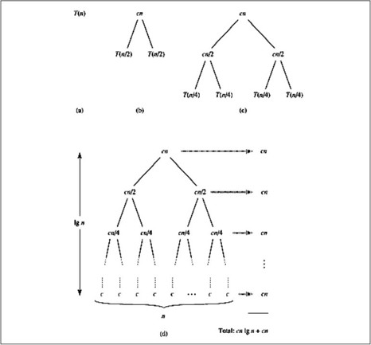
图11.5 归并排序算法的时间复杂度分析
1．快速排序是另外一种采用分而治之策略的排序算法，在平均情况下的时间复杂度也是Θ(nlgn)，但比归并排序有更小的时间常数。它的基本思想是这样的：
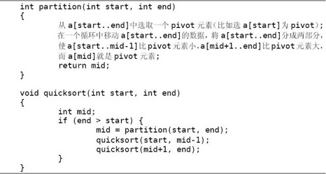
请补完partition函数，这个函数有多种写法，请选择时间常数尽可能小的实现方法。想想快速排序在最好和最坏情况下的时间复杂度分别是多少？快速排序在平均情况下的时间复杂度分析起来比较复杂，有兴趣的读者可以查阅参考文献[16]的7.4.2节。
2．总结一下我们见过的算法，哪些算法在平均情况和最坏情况下的时间复杂度差不多？哪些算法在平均情况和最好情况下的时间复杂度差不多？哪些算法的时间复杂度是固定的，分不出最好情况、最坏情况和平均情况？
有些查找问题要用时间复杂度为O(n)的算法来解决。例如写一个indexof函数，从任意输入字符串中找出某个字母的位置并返回这个位置，如果找不到就返回-1：
例11.3 线性查找
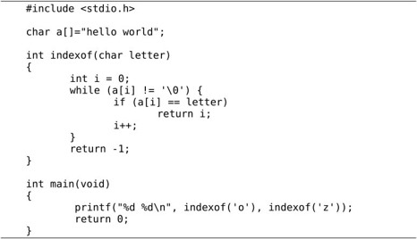
这个实现是最直观和最容易想到的，但它是不是最快的算法呢？我们知道插入排序也比归并排序更容易想到，但通常不如归并排序快。那么现在这个问题——给定一个随机排列的序列，找出其中某个元素的位置——有没有比O(n)更快的算法？比如O(lgn)？请读者思考一下。
1．实现一个算法，在一组随机排列的数中找出最小的一个。你能想到的最直观的算法一定是Θ(n)的，想想有没有比Θ(n)更快的算法？
2．在一组随机排列的数中找出第二小的，这个问题比上一个稍复杂，你能不能想出Θ(n)的算法？
3．进一步泛化，在一组随机排列的数中找出第k小的，这个元素称为k-th Order Statistic。能想到的最直观的算法肯定是先把这些数排序然后取第k个，时间复杂度和排序算法相同，可以是Θ(nlgn)。这个问题虽然比前两个问题复杂，但它也有平均情况下时间复杂度是Θ(n)的算法，将上一节习题1的快速排序算法稍加修改就可以解决这个问题：
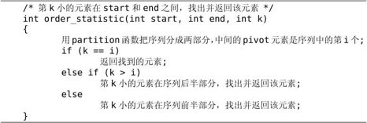
请编程实现这个算法。
如果不是从一组随机的序列里查找，而是从一组排好序的序列里找出某个元素的位置，则可以有更快的算法：
例11.4 折半查找
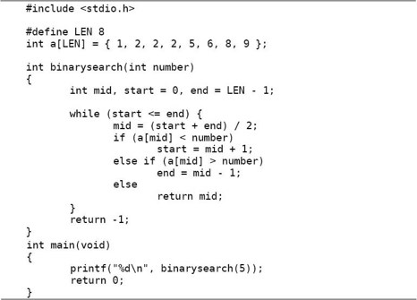
由于这个序列已经从小到大排好序了，每次取中间的元素和待查找的元素比较，如果中间的元素比待查找的元素小，就说明“如果待查找的元素存在，一定位于序列的后半部分”，这样可以把搜索范围缩小到后半部分，然后再次使用这种算法迭代。这种“每次将搜索范围缩小一半”的思想称为折半查找（Binary Search）。思考一下，这个算法的时间复杂度是多少？
这个算法的思想很简单，不是吗？可是参考文献[18]的4.1节说作者在课堂上讲完这个算法的思想然后让学生写程序，有90%的人写出的程序中有各种各样的Bug，读者不信的话可以不看书自己写一遍试试。这个算法容易出错的地方很多，比如mid = (start + end) / 2;这一句，在数学概念上其实是mid = ⎣(start + end) / 2⎦，还有start = mid + 1;和end = mid - 1;，如果前者写成了start = mid;或后者写成了end = mid;那么很可能会导致死循环（想一想什么情况下会陷入死循环）。
怎样才能保证程序的正确性呢？在第11.2节我们讲过借助Loop Invariant证明循环的正确性，binarysearch这个函数的主体也是一个循环，它的Loop Invariant可以这样描述：待查找的元素number如果存在于数组a之中，那么一定存在于a[start..end]这个范围之间，换句话说，在这个范围之外的数组a的元素中一定不存在number这个元素。以下为了书写方便，我们把这句话表示成mustbe(start, end, number)。可以一边看算法一边做推理：
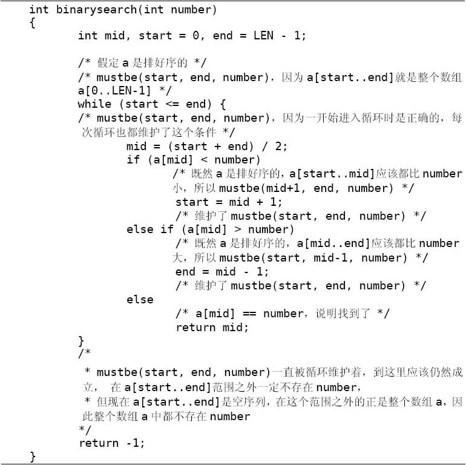
注意这个算法有一个非常重要的前提——a是排好序的。缺了这个前提，“如果a[mid] < number，那么a[start..mid]应该都比number小”这一步推理就不能成立，这个函数就不能正确地完成查找。从更普遍的意义上说，函数的调用者（Caller）和函数的实现者（Callee，被调用者）之间订立了一个契约（Contract），在调用函数之前，Caller要为Callee提供某些条件，比如确保a是排好序的，确保a[start..end]都是有效的数组元素而没有访问越界，这称为Precondition，然后Callee对一些Invariant进行维护（Maintenance），这些Invariant保证了Callee在函数返回时能够对Caller尽到某些义务，比如确保“如果number在数组a中存在，一定能找出来并返回它的位置；如果number在数组a中不存在，一定能返回-1”，这称为Postcondition。如果每个函数的文档都非常清楚地记录了Precondition、Maintenance和Postcondition是什么，那么每个函数都可以独立编写和测试，整个系统就会易于维护。这种编程思想是由Eiffel语言的设计者Bertrand Meyer提出来的，称为Design by Contract（DbC）。
测试一个函数是否正确需要把Precondition、Maintenance和Postcondition这三方面都测试到，比如binarysearch这个函数，即使它写得非常正确，既维护了Invariant也保证了Postcondition，如果调用它的Caller没有保证Precondition，最后的结果也还是错的。我们编写几个测试用的Predicate函数，然后把相关的测试插入到binarysearch函数中：
例11.5 带有测试代码的折半查找
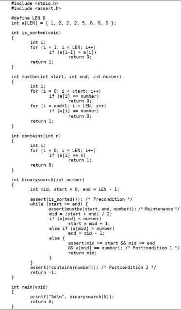
assert是头文件assert.h中的一个宏定义，执行到assert(is_sorted())这句时，如果is_sorted()返回值为真，则当什么事都没发生过，继续往下执行；如果is_sorted()返回值为假（例如改变数组的排列顺序），则报错退出程序：
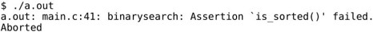
在代码中适当的地方使用断言（Assertion）可以有效地帮助我们测试程序。也许有人会问：我们用几个测试函数来测试binarysearch，那么这几个测试函数又用什么来测试呢？在实际工作中我们要测试的代码绝不会像binarysearch这么简单，而我们编写的测试函数往往都很简单，比较容易保证正确性，也就是用简单的、不容易出错的代码去测试复杂的、容易出错的代码。
测试代码只在开发和调试时有用，如果正式发布（Release）的软件也要运行这些测试代码就会严重影响性能了，如果在包含assert.h之前定义一个NDEBUG宏（表示No Debug），就可以禁用assert.h中的assert宏定义，这样代码中的所有assert测试都不起作用了：
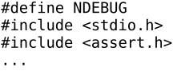
注意NDEBUG和我们以前使用的宏定义有点不同，例如#define N 20将N定义为20，在预处理时把代码中所有的标识符N替换成20，而#define NDEBUG把NDEBUG定义为空，在预处理时把代码中所有的标识符NDEBUG替换成空。这样的宏定义主要是为了用#ifdef等预处理指示测试它定义过没有，而不是为了做替换，所以定义成什么值都无所谓，一般定义成空就足够了。
还有另一种办法，不必修改源文件，在编译命令行加上选项-DNDEBUG就相当于在源文件开头定义了NDEBUG宏。宏定义和预处理到第20章再详细解释，在第20.4节将给出assert.h的一种实现。
1．本节的折半查找算法有一个特点：如果待查找的元素在数组中有多个则返回其中任意一个，以本节定义的数组int a[8] = { 1, 2, 2, 2, 5, 6, 8, 9 };为例，如果调用binarysearch(2)则返回3，即a[3]，而有些场合下要求这样的查找返回a[1]，也就是说，如果待查找的元素在数组中有多个则返回第一个。请修改折半查找算法实现这一特性。
2．编写一个函数double mysqrt(double y)求y的正平方根，参数y是正实数。我们用折半查找来找这个平方根，在从0到y之间必定有一个取值是y的平方根，如果我们查找的数x比y的平方根小，则x2<y，如果我们查找的数x比y的平方根大，则x2>y，我们可以据此缩小查找范围，当我们查找的数足够准确时（比如满足|x2-y|<0.001），就可以认为找到了y的平方根。思考一下这个算法需要迭代多少次？迭代次数的多少由什么因素决定？
3．编写一个函数double mypow(double x, int n)求x的n次方，参数n是正整数。最简单的算法是：
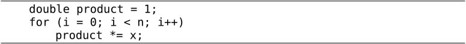
这个算法的时间复杂度是Θ(n)。其实有更好的办法，比如mypow(x, 8)，第一次循环算出x·x=x2，第二次循环算出x2·x2=x4，第三次循环算出x 4·x4=x8。这样只需要三次循环，时间复杂度是Θ(lgn)。思考一下如果n不是2的整数次幂应该怎么处理。请分别用递归和循环实现这个算法。
从以上几题可以看出，折半查找的思想有非常广泛的应用，不仅限于从一组排好序的元素中找出某个元素的位置，还可以解决很多类似的问题。参考文献[18]对于折半查找的各种应用和优化技巧有非常详细的介绍。